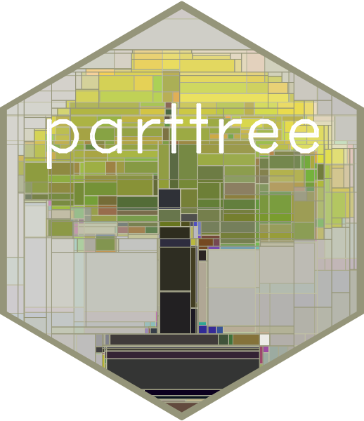
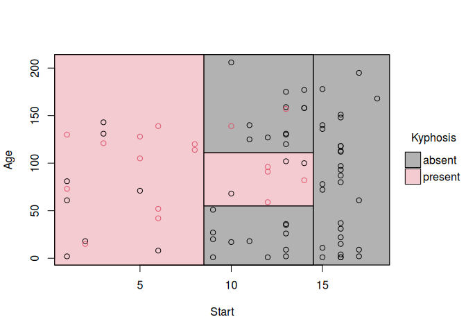
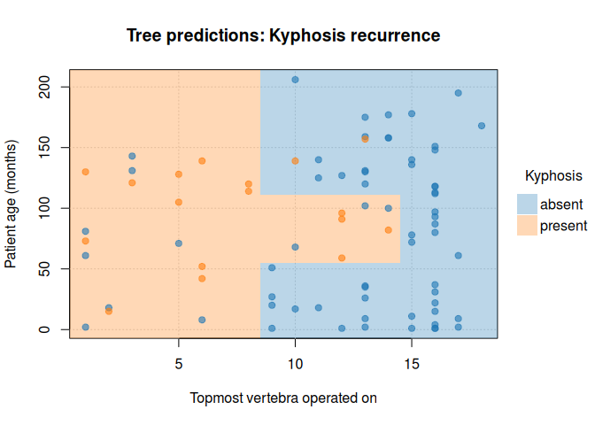
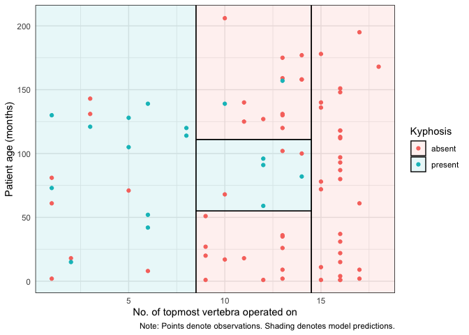

parttree 
Visualize simple 2-D decision tree partitions in R. The parttree package provides visualization methods for both base R graphics (via tinyplot) and ggplot2.
Installation
This package is not on CRAN yet, but can be installed from r-universe:
install.packages("parttree", repos = "https://grantmcdermott.r-universe.dev")Quickstart
The parttree homepage includes an introductory vignette and detailed documentation. But here’s a quickstart example using the “kyphosis” dataset that comes bundled with the rpart package. In this case, we are interested in predicting kyphosis recovery after spinal surgery, as a function of 1) the number of topmost vertebra that were operated, and 2) patient age.
The key function is parttree(), which comes with its own plotting method.
library(rpart) # For the dataset and fitting decisions trees
library(parttree) # This package
fit = rpart(Kyphosis ~ Start + Age, data = kyphosis)
# Grab the partitions and plot
fit_pt = parttree(fit)
plot(fit_pt)
Customize your plots by passing additional arguments:
plot(
fit_pt,
border = NA, # no partition borders
pch = 19, # filled points
alpha = 0.6, # point transparency
grid = TRUE, # background grid
palette = "classic", # new colour palette
xlab = "Topmost vertebra operated on", # custom x title
ylab = "Patient age (months)", # custom y title
main = "Tree predictions: Kyphosis recurrence" # custom title
)
ggplot2
For ggplot2 users, we offer an equivalent workflow via the geom_partree() visualization layer.
library(ggplot2) ## Should be loaded separately
ggplot(kyphosis, aes(x = Start, y = Age)) +
geom_parttree(data = fit, alpha = 0.1, aes(fill = Kyphosis)) + # <-- key layer
geom_point(aes(col = Kyphosis)) +
labs(
x = "No. of topmost vertebra operated on", y = "Patient age (months)",
caption = "Note: Points denote observations. Shading denotes model predictions."
) +
theme_minimal()